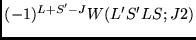
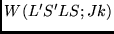
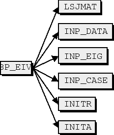
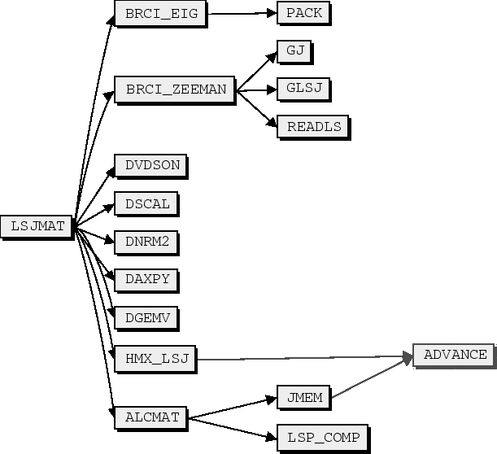
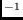
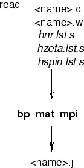
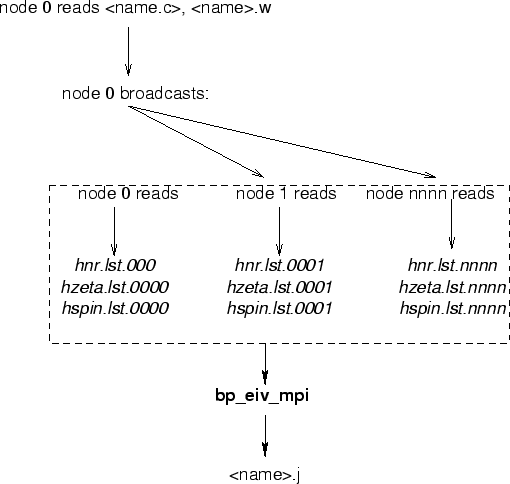

Next: BIOTR
Up: ATSP2K manual
Previous: BP_MAT
Contents
Subsections
BP_EIV
bp_eiv computes a set of eigenvalues using the matrix data,
which is supplied by bp_mat in the form of three files:
- hnr.lst the non-relativistic, J-independent contributions.
- hzeta.lst the spin-orbit and spin-other-orbit contributions
that need to be multiplied by
.
- hspin.lst the spin-spin contributions that need to be
multiplied by
.
where,
 is a Racah coefficient.
Selected set of J values and eigenvalues can be requested, and
for each term the program can apply energy corrections.
For each specified eigenvalues, the output file
contains the dominant configuration and its energy, the eigenvector,
and information identifying the case, such as J value, number
of electrons, the atomic number and the Zeeman factor.
13.16
The program starts with initializing basic constants in inita(),
initr(). inp_case() prompts the user to supply the name of the
case, type of calculation, relativistic or non-relativistic, and
if the mass correction will be included. Then,
the maximum and minimum eigenvalue to be computed need to be specified
as a 2*J number, followed by a request for indices to be computed
within each J. This data must be entered using the following format.
>Enter ATOM, relativistic (Y/N) with mass correction (Y/N)
A,y,y
>Gradient or Slater form? (G/S):
g
> Enter Maximum and minimum values of 2*J
4,2
>Enter eigenvalues: one line per term, eigenvalues separated by commas
2*J = 4
2,3,4
2*J = 2
1,2
.......
Figure 8.31:
bp_eiv program structure.
|  |
To compute the number of matrix elements, and respectively to
allocate memory, alcmat() and alctab() rely on a call to
jmem(), which in effect reads
hnr.lst, hzeta.lst, hspin.lst and computes
the number of nonzero elements in the interaction matrix.
If the requested memory is larger than the what is available, the
program continues the calculation, by allocating memory for the
largest column. In this case the dvdson() performs
matrix-vector multiplication (in dssbmv),
keeping in memory only a single column.
The matrix elements are assembled in (hmx_lsj()), then the
interaction matrix is diagonalized (lsjmat()). Next,
dvdson() finds the requested eigenvalues. Finally,
brci_zeeman(), computes the Zeman factor. The requested
eigenvectors are saved in a <name>.j file.
Figure 8.32:
Subroutine lsjmat().
|  |
bp_mat can adjust the final energies of a given LS term,
by shifting the diagonal matrix elements by an amount specified
by the user. For each term, the program asks the
users for shifts (in cm) which lower the level relative
to the lowest by the specified amount. The results are now written to a
file called <name>.new. Usually, this program is run first
without considering adjustments. The tables
program may then be used to find the spectrum from the energies
in a <name>.j file (this file may be a concatenated file
from separate bp_eiv runs). By comparing with observation,
a shift can be determined, it is usually equal to the
difference computed - observed in cm. When
interactions are not strong, this
procedure needs to be applied only once to
bring energy levels into agreement with observation, but for strong
mixing, several iterations may be needed. This adjustment process has
not been automated.
Each state is labeled according to the term of the largest component in
the eigenvector. This scheme will not produce unique labels when three
or more CSFs interact strongly. In such cases, the user will need to
edit the file and determine a suitable, unique sets of labels.
Also included for each state,
the g_J parameter for the Breit-Pauli expansion [#!PJ-gj!#],
and the g_J for an LS approximation.
This file is formatted. Expansion coefficients
are presented to 8 decimal places.
Figure 8.33:
IO files for the serial version.
|  |
Unlike bp_ang and bp_mat, which do not have communication
overhead other than initializing a finalizing the MPI calculation,
this program performs a number of MPI_Allreduce() steps,
in which the quantities computed by each processor are summed at
node = 0. The elements of the interaction matrix are
calculated by columns in hmx_lsj(), additionally, the
the diagonals are adjusted if the user provided desired energy.
corrections. Each node assembles only columns which are
multiples on myid + 1. After processing all ncfg
columns, the information is exchanged between
the nodes using a global summation over all nodes.
do j = myid+1,ncfg,nprocs
call hmx_lsj(ncfg,j,nze,ind_jj,nij,istart,shift,
: mycol,pflsj,njv)
end do
* ..gather all diagonals from processors.
call mpi_allr_dp(hii,ncfg) !gdsummpi(hii,ncfg,tm)
end if
node 0 reads the configuration list
and the wave function, and broadcasts the data to the other nodes.
Each node of bp_eiv reads the corresponding data files,
hnr.lst.nnnn, hzeta.lst.nnnn, hspin.lst.nnnn,
Figure 8.34
Figure 8.34:
IO files for the MPI version.
|  |
Next: BIOTR
Up: ATSP2K manual
Previous: BP_MAT
Contents
2001-10-11